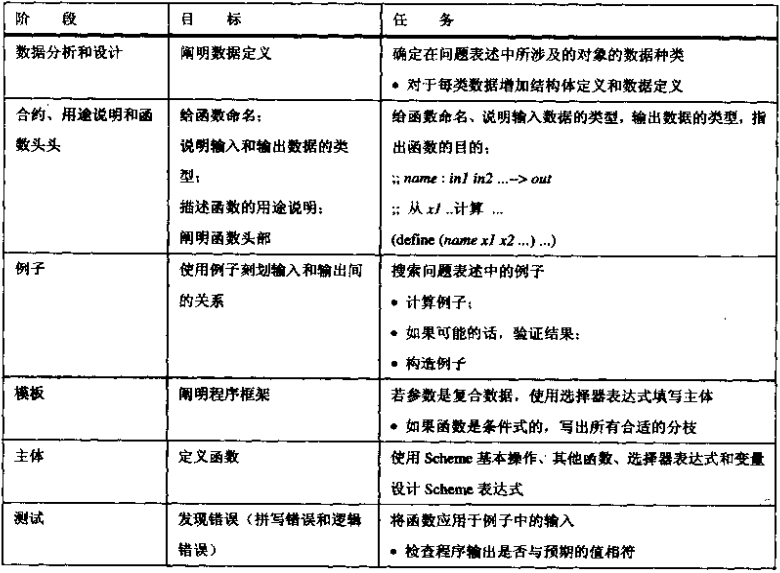

补充练习：绘制简单图形
;; 红绿灯的大小 (define WIDTH 50) (define HEIGHT 160) (define BULB-RADIUS 20) (define BULB-DISTANCE 10) ;; 灯泡的位置 (define X-BULBS (quotient WIDTH 2)) (define Y-RED (+ BULB-DISTANCE BULB-RADIUS)) (define Y-YELLOW (+ Y-RED BULB-DISTANCE (* 2 BULB-RADIUS))) (define Y-GREEN (+ Y-YELLOW BULB-DISTANCE (* 2 BULB-RADIUS))) ;; 绘制红灯亮时的灯光 (start WIDTH HEIGHT) (draw-solid-disk (make-posn X-BULBS Y-RED) BULB-RADIUS 'red) (draw-circle (make-posn X-BULBS Y-YELLOW) BULB-RADIUS 'yellow) (draw-circle (make-posn X-BULBS Y-GREEN) BULB-RADIUS 'green)
习题6.2.2
;; clear-bulb: symbol -> boolean ;; 关闭对应颜色的红绿灯 (define (clear-bulb color) (cond ((symbol=? color 'red) (clear-red-bulb)) ((symbol=? color 'green) (clear-green-bulb)) ((symbol=? color 'yellow) (clear-yellow-bulb)))) ;; clear-red-bulb ;; 关闭红灯 (define (clear-red-bulb) (and (clear-solid-disk (make-posn X-BULBS Y-RED) BULB-RADIUS 'red) (draw-circle (make-posn X-BULBS Y-RED) BULB-RADIUS 'red))) ;; clear-yellow-bulb ;; 关闭黄灯 (define (clear-yellow-bulb) (and (clear-solid-disk (make-posn X-BULBS Y-YELLOW) BULB-RADIUS 'yellow) (draw-circle (make-posn X-BULBS Y-YELLOW) BULB-RADIUS 'yellow))) ;; clear-green-bulb ;; 关闭绿灯 (define (clear-green-bulb) (and (clear-solid-disk (make-posn X-BULBS Y-GREEN) BULB-RADIUS 'green) (draw-circle (make-posn X-BULBS Y-GREEN) BULB-RADIUS 'green)))
习题6.2.3
;; draw-bulb: symbol -> boolean ;; 打开对应颜色的红绿灯 (define (draw-bulb color) (cond ((symbol=? color 'red) (draw-red-bulb)) ((symbol=? color 'green) (draw-green-bulb)) ((symbol=? color 'yellow) (draw-yellow-bulb)))) ;; draw-red-bulb ;; 打开红灯 (define (draw-red-bulb) (draw-solid-disk (make-posn X-BULBS Y-RED) BULB-RADIUS 'red)) ;; draw-yellow-bulb ;; 打开黄灯 (define (draw-yellow-bulb) (draw-solid-disk (make-posn X-BULBS Y-YELLOW) BULB-RADIUS 'yellow)) ;; draw-green-bulb ;; 打开绿灯 (define (draw-green-bulb) (draw-solid-disk (make-posn X-BULBS Y-GREEN) BULB-RADIUS 'green))
习题6.2.4
;; switch: symbol symbol -> boolean ;; 关闭第一个灯，打开第二个灯 (define (switch close open) (and (clear-bulb close) (draw-bulb open)))
习题6.2.5
;; next: symbol -> symbol ;; 将当前红绿灯颜色救困扶危为下一颜色 (define (next current-color) (cond ((and (symbol=? current-color 'red) (switch 'red 'green)) 'green) ((and (symbol=? current-color 'yellow) (switch 'yellow 'red)) 'red) ((and (symbol=? current-color 'green) (switch 'green 'yellow)) 'yellow)))
结构体定义
Racket创建结构体：
(define-struct structname (field1 field2 ...)) (define tmp_entry (make-structname field1 field2 ...)) (structname-field1 tmp_entry) (structname-field2 tmp_entry) ...
习题6.3.1
(define-struct movie (title producer)) (define m (make-movie 'title 'producer)) (movie-title m) (movie-producer m) (define-struct boyfriend (name hair eyes phone)) (define d (make-boyfriend 'name 'hair 'eyes 'phone)) (boyfriend-name d) (boyfriend-hair d) (boyfriend-eyes d) (boyfriend-phone d) (define-struct cheerleader (name number)) (define r (make-cheerleader 'name 'number)) (cheerleader-name r) (cheerleader-number r) ...
习题6.3.3
(define-struct plane (name acceleration max-speed voyage)) ;; within-range: plane number -> boolean ;; 确定某个飞机是否能够到达指定目标 (define (within-range plane distence) (>= (plane-voyage plane) distence)) ;; reduce-reduce: plane -> plane (define (reduce-range plane) (make-plane (plane-name plane) (plane-acceleration plane) (plane-max-speed plane) (* 0.8 (plane-voyage plane))))
数据定义
Scheme规范中没有强制在代码中提供方法来指定结构中每个字段的具体数据定义， 但是可以通过注释的方式来进行说明。
不过具体到各个Scheme方言，它们或多或少都在代码内提供相关方法来指定了。
设计处理复合数据的函数
习题6.5.1
(define-struct movie (title producer)) ;; movie-template: movie -> ??? (define (movie-template a-movie) ... (movie-title a-movie)... ... (movie-producer a-movie)...) (define-struct boyfriend (name hair eyes phone)) ;; boyfriend-template: boyfriend -> ??? (define (boyfriend-template a-boyfriend) ... (boyfriend-name a-boyfriend)... ... (boyfriend-hair a-boyfriend)... ... (boyfriend-eyes a-boyfriend)... ... (boyfriend-phone a-boyfriend)...) (define-struct cheerleader (name number)) ;; cheerleader-template: cheerleader -> ??? (define (cheerleader-template a-cheerleader) ... (cheerleader-name a-cheerleader)... ... (cheerleader-number a-cheerleader)...) (define-struct CD (artist title price)) ;; CD-template: CD -> ?? (define (CD-template a-CD) ... (CD-artist a-CD)... ... (CD-title a-CD)... ... (CD-price a-CD)...) (define-struct sweater (material size producer)) ;; sweater-template: sweater -> ??? (define (sweater-template a-sweater) ... (sweater-material a-sweater)... ... (sweater-size a-sweater)... ... (sweater-producer a-sweater)...)
习题6.5.2
(define-struct time (hours minutes seconds)) ;; hours, minutes, seconds 都为一个整数 ;; time->seconds: time -> number ;; 将时间转换成零晨到当前time的秒数 ;; (0 0 1) 就离零晨1秒 ;; (0 1 1) 就离零晨61秒 ;; (1 1 1) 就离零晨3661秒 ;; time-template: time -> ?? (define (time-template a-time) ... (time-hours a-time)... ... (time-minutes a-time)... ... (time-seconds a-time)...) (define (time->seconds t) (+ (* 60 60 (time-hours t)) (* 60 (time-minutes t)) (time-seconds t))) ;; 测试time->seconds (eq? (time->seconds (make-time 0 0 0)) 0) (eq? (time->seconds (make-time 0 0 1)) 1) (eq? (time->seconds (make-time 0 1 0)) 60) (eq? (time->seconds (make-time 1 0 0)) (* 60 60)) (eq? (time->seconds (make-time 1 1 1)) (+ (* 60 60) 60 1))
补充练习：圆和长方形的移动
作者将实现这个补充练习的要求：圆和长方形的移动， 拆分成多个习题，每个习题基本是一个对应一个功能函数， 当你做完所有习题，就能体会到作者来做这这个练习的做题思路了。 并且每步的习题设计都是按照之前提出的 设计决窍 来执行的。
所以一定要按步骤完成，不要为了做习题而做习题， 而是掌握 设计决窍 ，了解作者的设计思路/思想并模仿以及学会它。
习题6.6.1
按照 设计决窍 ,第一步先说明数据定义，并设计该数据定义的模板。
(define-struct circle (point radius color)) ;; point为posn结构体，radius为一个整数，color为一个符号 ;; fun-for-circle: circle -> ?? (define (fun-for-circle a-circle) ... (circle-point a-circle)... ... (circle-radius a-circle)... ... (circle-color a-color)...)
习题6.6.2
从这一题开始就是作者的做题思路了， 他将这一练习拆分成多个函数，如果让你自己做，你会有什么思路?
;; draw-a-circle: circle -> boolean ;; 在屏幕上绘制一个圆 (define (draw-a-circle circle) (draw-circle (circle-point circle) (circle-radius circle) (circle-color circle))) ;; 测试 (start 300 300) (draw-a-circle (make-circle (make-posn 100 100) 50 'red)) (draw-a-circle (make-circle (make-posn 150 150) 10 'yellow))
习题6.6.3
;; posn-distance: posn posn -> number ;; 得到两点之间的距离 (define (posn-distance posn-a posn-b) (sqrt (+ (sqr (- (posn-x posn-a) (posn-x posn-b))) (sqr (- (posn-y posn-a) (posn-y posn-b)))))) ;; 测试 (= (posn-distance (make-posn 1 1) (make-posn 4 5)) 5) ;; in-circle?: circle posn -> boolean ;; 判断posn结构体表示的点是否在圆内 (define (in-circle? circle posn) (<= (posn-distance (circle-point circle) posn) (circle-radius circle))) ;; 测试 (eq? (in-circle? (make-circle (make-posn 100 100) 50 'red) (make-posn 110 110)) #t) (eq? (in-circle? (make-circle (make-posn 100 100) 50 'red) (make-posn 200 210)) #f)
习题6.6.4
;; translate-circle: circle number -> circle ;; 根据原始的圆circle和一个数delta， ;; 输出另外一个圆，其圆心位于原始圆的右边 (define (translate-circle circle delta) (make-circle (make-posn (+ (posn-x (circle-point circle)) delta) (posn-y (circle-point circle))) (circle-radius circle) (circle-color circle))) ;; 测试 (eq? (translate-circle (make-circle (make-posn 100 100) 50 'red) 200) (make-circle (make-posn 300 100) 50 'red))
习题6.6.5
;; clear-a-circle: circle -> boolean ;; 在画布上清除一个圆 (define (clear-a-circle circle) (clear-circle (circle-point circle) (circle-radius circle) (circle-color circle))) ;; 测试 (start 300 300) (define a-circle (make-circle (make-posn 100 100) 50 'red)) (draw-a-circle a-circle) (clear-a-circle a-circle)
习题6.6.6
;; draw-and-clear-circle: circle -> boolean ;; 在画布上画出一个圆，然后过一段时间清除 (define (draw-and-clear-circle circle) (and (draw-a-circle circle) (sleep-for-a-while 1) (clear-a-circle circle))) ;; 测试 (start 300 300) (draw-and-clear-circle (make-circle (make-posn 100 100) 50 'red)) ;; move-circle: number circle -> circle ;; 绘制并消除一个圆，再平移delta个像素 (define (move-circle delta a-circle) (cond ((draw-and-clear-circle a-circle) (translate-circle a-circle delta)) (else a-circle))) ;; 测试 (start 200 100) (draw-a-circle (move-circle 10 (move-circle 10 (move-circle 10 (make-circle (make-posn 100 50) 20 'red)))))
习题6.6.7
(define-struct rectangle (nw-corner width height color)) ;; nw-color 为一个posn结构体 ;; width height 为数值 ;; color 为符号 ;; fun-for-rect: rectangle -> ?? (define (fun-for-rect a-rectangle) ... (rectangle-nw-corner a-rectangle)... ... (rectangle-width a-rectangle)... ... (rectangle-height a-rectangle)... ... (rectangle-color a-rectangle)...)
习题6.6.8
;; draw-a-rectangle: rectangle -> boolean ;; 在画布上画出一个实心长方形 (define (draw-a-rectangle a-rectangle) (draw-solid-rect (rectangle-nw-corner a-rectangle) (rectangle-width a-rectangle) (rectangle-height a-rectangle) (rectangle-color a-rectangle))) ;; 测试 (start 300 300) (draw-a-rectangle (make-rectangle (make-posn 100 100) 100 50 'red))
习题6.6.9
(define-struct distance (x y)) ;; x y 为数值 ;; fun-for-distance: distance -> ?? (define (fun-for-distance a-distance) ... (distance-x a-distance)... ... (distance-y a-distance)...) ;; in-rectangle?: rectangle posn ;; 判断一个像素是否在长方形内部 (define (in-rectangle? a-rectangle point) (let (dis (make-distance (- (posn-x point) (posn-x (rectangle-nw-corner a-rectangle))) (- (posn-y point) (posn-y (rectangle-nw-corner a-rectangle))))) (and (> (distance-x dis) 0) (> (distance-y dis) 0) (> (distance-x dis) (rectangle-width a-rectangle)) (> (distance-y dis) (rectangle-height a-rectangle)))))
习题6.6.10
;; translate-rectangle: rectangle -> rectangle ;; 根据原始的长方形和一个数delta， ;; 输出另外一个长方形，其位于原始长方形的右边， ;; 左上角和原长方形的左上角距离为delta (define (translate-rectangle a-rectangle) (let ((nw-corner (rectangle-nw-corner a-rectangle))) (make-rectangle (make-posn (+ (posn-x nw-corner) delta) (posn-y nw-corner)) (rectangle-width a-rectangle) (rectangle-height a-rectangle) (rectangle-color a-rectangle)))) ;; 测试 (define src-rectangle (make-rectangle (make-posn 100 100) 100 50 'red)) (define new-rectangle (translate-rectangle src-rectangle 20)) (= (+ (posn-x (rectangle-nw-corner src-rectangle)) 20) (posn-x (rectangle-nw-corner new-rectangle)))
习题6.6.11
;; clear-a-rectangle: rectangle -> boolean ;; 清除一个长方形 (define (clear-a-rectangle rectangle) (clear-solid-rect (rectangle-nw-corner a-rectangle) (rectangle-width a-rectangle) (rectangle-height a-rectangle) (rectangle-color a-rectangle))) ;; 测试 (start 300 300) (define a-rectangle (make-rectangle (make-posn 100 100) 100 50 'red)) (draw-a-rectangle a-rectangle) (clear-a-rectangle a-rectangle)
习题6.6.12
;; draw-and-clear-rectangle: rectangle -> boolean ;; 在画布上画出一个圆，然后过一段时间清除 (define (draw-and-clear-rectangle rectangle) (and (draw-a-rectangle rectangle) (sleep-for-a-while 1) (clear-a-rectangle rectangle))) ;; 测试 (start 300 300) (draw-and-clear-rectangle (make-rectangle (make-posn 100 100) 100 50 'red)) ;; move-rectangle: number rectangle -> rectangle ;; 绘制并清除一个长方形，然后平移delta个像素 (define (move-rectangle delta a-rectangle) (cond ((draw-and-clear-rectangle a-rectangle) (translate-rectangle a-rectangle delta)) (else a-rectangle))) ;; 创建一个长方形，并移动4次 (define a-rectangle (make-rectangle (make-posn 100 100) 100 50 'red)) (draw-a-rectangle (move-rectangle 10 (move-rectangle 10 (move-rectangle 10 (move-rectangle 10 a-rectangle)))))
补充练习：刽子手游戏
习题6.7.1
这一题我是直接复制官方的答案， 我压根没看懂它给的三个快照图片...
;; draw-next-part: symbol -> boolean ;; 绘制人体的某一部分， ;; 函数输入为以下七个符号之一: ;; 'right-leg 'left-leg 'left-arm 'right-arm 'body 'head 'noose (define (draw-next-part body-part) (cond [(eq? body-part 'body) (draw-solid-line (make-posn 100 60) (make-posn 100 130) 'black)] [(eq? body-part 'right-leg) (draw-solid-line (make-posn 100 130) (make-posn 30 170) 'black)] [(eq? body-part 'left-leg) (draw-solid-line (make-posn 100 130) (make-posn 170 170) 'black)] [(eq? body-part 'right-arm) (draw-solid-line (make-posn 100 75) (make-posn 40 65) 'black)] [(eq? body-part 'left-arm) (draw-solid-line (make-posn 100 75) (make-posn 160 65) 'black)] [(eq? body-part 'head) (and (draw-solid-disk (make-posn 120 50) 30 'red) (draw-solid-line (make-posn 115 35) (make-posn 123 43) 'black) (draw-solid-line (make-posn 123 35) (make-posn 115 43) 'black) (draw-solid-line (make-posn 131 40) (make-posn 139 48) 'black) (draw-solid-line (make-posn 139 40) (make-posn 131 48) 'black))] [(eq? body-part 'noose) (and (draw-solid-line (make-posn 100 30) (make-posn 100 10) 'black) (draw-solid-line (make-posn 100 10) (make-posn 0 10) 'black))])) ;; 测试 (start 200 200) (draw-next-part 'noose) (start 200 200) (draw-next-part 'noose) (draw-next-part 'head) (start 200 200) (draw-next-part 'noose) (draw-next-part 'head) (draw-next-part 'body) (start 200 200) (draw-next-part 'noose) (draw-next-part 'head) (draw-next-part 'body) (draw-next-part 'right-arm) (start 200 200) (draw-next-part 'noose) (draw-next-part 'head) (draw-next-part 'body) (draw-next-part 'right-arm) (draw-next-part 'left-arm) (start 200 200) (draw-next-part 'noose) (draw-next-part 'head) (draw-next-part 'body) (draw-next-part 'right-arm) (draw-next-part 'left-arm) (draw-next-part 'right-leg) (start 200 200) (draw-next-part 'noose) (draw-next-part 'head) (draw-next-part 'body) (draw-next-part 'right-arm) (draw-next-part 'left-arm) (draw-next-part 'right-leg) (draw-next-part 'left-leg)
习题6.7.2
(define-struct chars (a b c)) ;; a, b, c 都是符号类型 ;; chars-template: a-chars -> ??? (define (chars-template a-chars) ... (chars-a a-chars)... ... (chars-b a-chars)... ... (chars-c a-chars)...)
习题6.7.3
;; reveal: chars chars symbol -> chars (define (reveal chosen status char) (make-chars (cond ((symbol=? (chars-a chosen) char) char) (else (chars-a status))) (cond ((symbol=? (chars-b chosen) char) char) (else (chars-b status))) (cond ((symbol=? (chars-c chosen) char) char) (else (chars-c status))))) ;; 测试 (reveal (make-chars 't 'e 'a) (make-chars '_ 'e '_) 'u) (reveal (make-chars 'a 'l 'e) (make-chars 'a '_ '_) 'e) (reveal (make-chars 'a 'l 'l) (make-chars '_ '_ '_) 'l)
Comments !